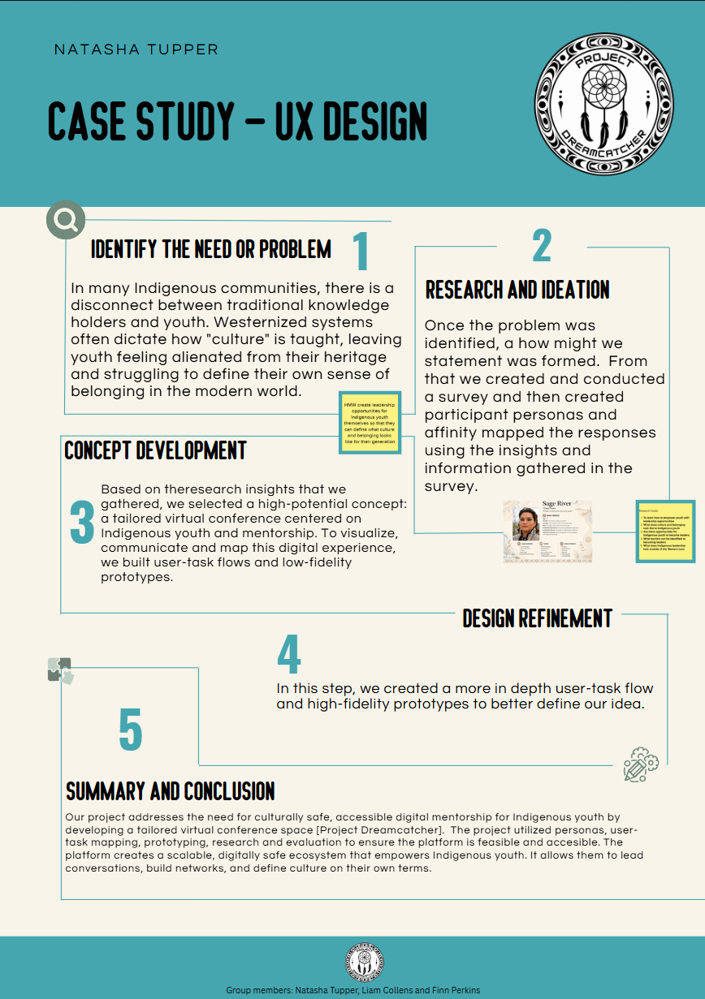

UX-Design Group Project
Title of project: Project Dreamcatcher
This project was created as a group focused on empowering Indigenous youth. We started with a problem and statment and then y came up with a how might we statment of: "How might we create leadership opportunities for Indigenous youth themselves so that they can define what culture and belonging looks like for their generation?".
We conducted user research, including developing a survey and creating personas to better understand participant needs. Insights gathered during the research phase formed the creation of low and high-fidelity wireframes.
The end result was a tailored virtual conference platform. The platform allows the user to register for a LIVE workshop, download pre-recorded material, and connect with a mentor.
Case Study:

What we did:
We started with conducting a survey, which had 10 respondants. We affinity mapped their responses and created a persona based on the information gathered.


We created these low-fidelity wireframes to outline how we wanted the user to interract with the platform


We then created high-fidelity wireframes to outline the look of the pages in more detail